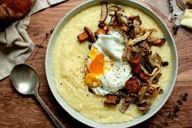

POLENTA RECIPE

Ingredients:
- Water: 4 cups
- Cornmeal (polenta): 1 cup
- Salt: 1 teaspoon
- Butter or olive oil: 2 tablespoons (optional)
- Grated Parmesan cheese: ½ cup (optional)
- Freshly ground black pepper: to taste
Method:
- In a large saucepan, bring water to a boil.
- Gradually whisk in the cornmeal (polenta) in a slow, steady stream to avoid lumps.
- Reduce heat to low and cook the polenta, stirring frequently with a wooden spoon, for about 30-40 minutes until thickened and creamy.
- Add salt and continue to stir until well combined.
- Optional: Stir in butter or olive oil for added richness and flavor.
- Optional: Remove from heat and mix in grated Parmesan cheese for extra creaminess and a cheesy flavor.
- Season with freshly ground black pepper to taste.
- Serve the polenta as a creamy side dish or allow it to cool and set in a baking dish to be cut into slices and grilled or baked.
Polenta is Ready to Enjoy!!!